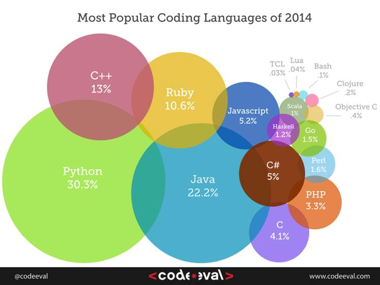

<2014년 가장 인기있는 코딩언어>
<출처> http://www.zdnet.co.kr/news/news_view.asp?artice_id=20150706164739&type=det&re=
스티븐 오그레이디 레드몽크 애널리스트는 최근 '레드몽크 프로그래밍 언어 랭킹:2015년 6월 보고서' 공개!
보고서에 따르면 올해 6월 기준으로 가장 많이 활용된 언어는 자바스크립트, 파이썬은 4위....
현재 개발 언어 사용량을 객관적으로 보여주기는 어렵지만 스택오버플로와 깃 허브 데이터 간 상관관계를 파악, 미래 개발언어 트렌드를 예측하는 용도이다.
여기서! 아직 파이썬의 사용량은 상위권을 유지하고 있습니다.
<출처> http://www.etnews.com/20140717000083 , http://www.zdnet.co.kr/news/news_view.asp?artice_id=20140808162008&type=det
이미 파이썬은 이미 미국 대학들은 정규 과목으로 선택하여 초보자용 프로그래밍 교육에 쓰이고 있습니다. 우리나라 또한 파이썬에 대한 컨퍼런스가 생기는듯 관심이 증가 하고 있습니다.
왜 파이썬 인가?
1. 읽고 사용하기 쉽다.
파이썬 개발자이자 PyPL 언어 인덱스를 운영하는 블로거인 피에르 카보넬은 “파이썬 프로그램의 주요 특성은 읽기 쉽다는 데 있다”고 말했다. 카보넬은 “이점이 많은 개발자에게 혜택을 가져다주었다. 프로그램 작성에 있어서 개발자의 생각을 명확하게 발전시켜줄 뿐만 아니라, 이 프로그램을 유지 보수하거나 개선하는데에도 많은 도움을 준다.
2. 사물 인터넷의 기회를 얻을 수 있다.
파이썬은 라즈베리파이가 기반으로 하고 있는 만큼 사물인터넷에서도 인기를 얻을 것이라고 카보넬은 말한다. 라즈베리파이의 설명서에서는 파이썬 언어를 “사용이 쉬운 (읽고 쓰기 쉬운) 환상적이고 강력한 프로그래밍 언어로, 라즈베리파이와 더불어 사용자의 프로젝트를 실제 세계와 연결해준다”고 이야기한다.
3. 비동기식 코딩
디벨은 “파이썬은 쓰레딩 대신 단일 이벤트 루프를 사용해 소수 유닛에서 작업하는 비동기식 코드를 작성하는 데 뛰어나다”며, “이 코드는 혼란스러운 자원 경쟁이나 교착상태를 유발하지 않고도 작성과 유지보수를 수월하게 만들어준다고 말했다.
4. 자바보다 뛰어나 멀티패러다임 접근방식
파이썬의 프로그래밍 접근방식은 자바의 프로그래밍 접근방식만큼 제한적이지 않다고 카보넬은 말한다. 카보넬은 “예를 들어 ‘Hello world’를 파이썬으로 프린트하기 위해서는 객체지향 클래스를 생성할 필요가 없지만, 자바에서는 만들어야 한다”는 예시를 덧붙였다. 자바와 달리 파이썬은 멀티패러다임이고 객체지향을 지원하며, 절차적이고 함수형 프로그래밍 스타일이라고 카보넬은 말한다.